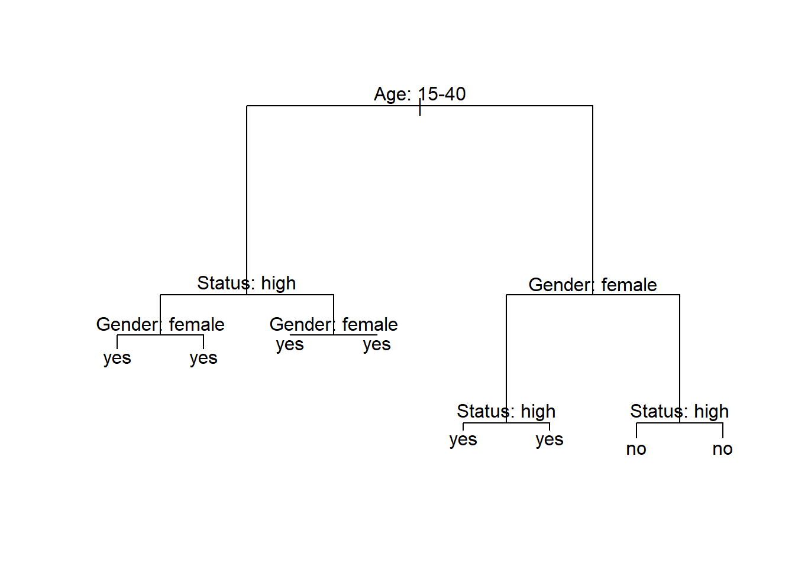

Part 3 Tree-Based Models

This tutorial focuses on tree-based models and their implementation in R. For the more advanced, a recommendable resource for tree-based modeling is @prasad2006newer or @gries2021statistics. Very good papers dealing with many critical issues related to tree-based models are @strobl2009tree and @breiman2001modeling.

This tutorial is aimed at intermediate and advanced users of R with the aim of showcasing how to perform tree-based modeling and classification using R. The aim is not to provide a fully-fledged analysis but rather to show and exemplify how to implement and perform basic tree-based modeling and classification using R.
The entire R Notebook for the tutorial can be downloaded here. If you want to render the R Notebook on your machine, i.e. knitting the document to html or a pdf, you need to make sure that you have R and RStudio installed and you also need to download the bibliography file and store it in the same folder where you store the Rmd file.
Preparation and session set up
This tutorial is based on R. If you have not installed R or are new to it, you will find an introduction to and more information how to use R here. For this tutorials, we need to install certain packages from an R library so that the scripts shown below are executed without errors. Before turning to the code below, please install the packages by running the code below this paragraph. If you have already installed the packages mentioned below, then you can skip ahead and ignore this section. To install the necessary packages, simply run the following code - it may take some time (between 1 and 5 minutes to install all of the libraries so you do not need to worry if it takes some time).
# install packages
install.packages("Boruta")
install.packages("tree")
install.packages("caret")
install.packages("cowplot")
install.packages("tidyverse")
install.packages("ggparty")
install.packages("Gmisc")
install.packages("grid")
install.packages("Hmisc")
install.packages("party")
install.packages("partykit")
install.packages("randomForest")
#install.packages("Rling")
install.packages("pdp")
install.packages("tidyr")
install.packages("RCurl")
install.packages("vip")
install.packages("flextable")Now that we have installed the packages, we can activate them as shown below.
# load packages
library(Boruta)
library(tree)
library(caret)
library(cowplot)
library(tidyverse)
library(ggparty)
library(Gmisc)
library(grid)
library(Hmisc)
library(party)
library(partykit)
library(randomForest)
#library(Rling)
library(pdp)
library(RCurl)
library(tidyr)
library(vip)
library(flextable)
NOTE
In some cases, installing the caret package can be a bit more complicated. In my case, it was necessary to execute the code chunk shown below. However, once the caret package is installed, you do not need to go through these steps again and can simply activate it by calling library(caret).
`
# install caret library
source("https://bioconductor.org/biocLite.R");
biocLite(); library(Biobase)
install.packages("Biobase",
repos=c("http://rstudio.org/_packages",
"http://cran.rstudio.com",
"http://cran.rstudio.com/", dependencies=TRUE))
install.packages("dimRed", dependencies = TRUE)
install.packages('caret', dependencies = TRUE)# activate caret library
library(caret)`
Once you have installed R, RStudio, and have also initiated the session by executing the code shown above, you are good to go.
3.1 Tree-Structure Model Basics
This section deals with tree-structure models which fall into the machine-learning rather than the inference statistics category as they are commonly used for classification and prediction tasks rather than explanation of relationships between variables.
The most basic type of tree-structure model is a decision tree or CART (classification and regression tree). A more optimized version of CARTs are conditional inference trees (CITs) - although CART and CITs are commonly treated as one and the same thing although CITs differ from CARTs in that they provide more accurate variable importance measures. Like random forests, inference trees are non-parametric and thus do not rely on distributional requirements (or at least on fewer). The tree structure represents recursive partitioning of the data to minimize residual deviance. Several advantages have been associated with using tree-based models:
Tree-structure models are very useful because they can deal with different types of variables and provide a very good understanding of the structure in the data.
Tree-structure models have been deemed particularly interesting for linguists because they can handle moderate sample sizes and many high-order interactions better then regression models shows that there can be issues especially when dealing with small data samples, single trees (rather than forests), and data where the variance is predictable based on a single interaction (as shown by @gries2021statistics, chapter 7).
Tree-structure models are (supposedly) better at detecting non-linear or non-monotonic relationships between predictors and dependent variables.
Tree-structure models are easy to implement in R and do not require the model selection, validation, and diagnostics associated with regression models.
Tree-structure models can be used as variable-selection procedure which informs about which variables have any sort of significant relationship with the dependent variable and can thereby inform model fitting.
Despite these potential advantages, a word of warning is in order: @gries2021statistics admits that tree-based models can be very useful but there are some issues that but some serious short-comings of tree-structure models remain under-explored. For instance,
Tree-structure models only inform about the importance of a variable but not if the variable is important as a main effect or as part of interactions (or both)! The importance only shows that there is some important connection between the predictor and the dependent variable.
Simple tree-structure models have been shown to fail in detecting the correct predictors if the variance is solely determined by a single interaction [@gries2021statistics, chapter 7.3]. This failure is caused by the fact that the predictor used in the first split of a tree is selected as the one with the strongest main effect [@boulesteix2015interaction, 344]. This issue can, however, be avoided by hard-coding the interactions as predictors plus using ensemble methods such as random forests rather than individual trees [see @gries2021statistics, chapter 7.3].
Another shortcoming is that tree-structure models partition the data (rather than “fitting a line” through the data which can lead to more coarse-grained predictions compared to regression models when dealing with numeric dependent variables [again, see @gries2021statistics, chapter 7.3].
@boulesteix2015interaction, 341 state that high correlations between predictors can hinder the detection of interactions when using small data sets. However, regression do not fare better here as they are even more strongly affected by (multi-)collinearity (see @@gries2021statistics, chapter 7.3).
Tree-structure models are bad a detecting interactions when the variables have strong main effects which is, unfortunately, common when dealing with linguistic data [@wrigt2016interac].
Before we implement a conditional inference tree in R, we will have a look at how decision trees work. We will do this in more detail here as random forests and Boruta analyses are extensions of inference trees and are therefore based on the same concepts.
3.2 Classification And Regression Trees
The most basic type of tree-structure model is a decision tree which is a type of classification and regression tree (CART). A more elaborate version of a CART is called a Conditional Inference Tree (CIT). The difference between a CART and a CIT is that CITs use significance tests, e.g. the p-values, to select and split variables rather than some information measures like the Gini coefficient [@gries2021statistics].
Below is an example of a decision tree which shows what what response to expect - in this case whether a speaker uses discourse like or not. Decision trees, like all CARTs and CITs, answer a simple question, namely How do we best classify elements based on the given predictors?. The answer that decision trees provide is the classification of the elements based on the levels of the predictors. In simple decision trees, all predictors, even those that are not significant are included in the decision tree. The decision tree shows that the best (or most important) predictor for the use of discourse like is age as it is the highest node. Among young speakers, those with high status use like more compared with speakers of lower social status. Among old speakers, women use discourse like more than men.

The yes and no at the bottom show if the speaker should be classified as a user of discourse like (yes or no). Each split can be read as true to the left and false to the right. So that, at the first split, if the person is between the ages of 15 and 40, we need to follow the branch to the left while we need to follow to the right if the person is not 15 to 40.
Before going through how this conditional decision tree is generated, let us first go over some basic concepts. The top of the decision tree is called root or root node, the categories at the end of branches are called leaves or leaf nodes. Nodes that are in-between the root and leaves are called internal nodes or just nodes. The root node has only arrows or lines pointing away from it, internal nodes have lines going to and from them, while leaf nodes only have lines pointing towards them.
How to prune and evaluate the accuracy of decision trees is not shown here. If you are interested in this, please check out chapter 7 of @gries2021statistics which is a highly recommendable resource that provide a lot of additional information about decision trees and CARTs.
Let us now go over the process by which the decision tree above is generated. In our example, we want to predict whether a person makes use of discourse like given their age, gender, and social status.
In a first step, we load and inspect the data that we will use in this tutorial.
# load data
citdata <- read.delim("https://slcladal.github.io/data/treedata.txt", header = T, sep = "\t")Age | Gender | Status | LikeUser |
15-40 | female | high | no |
15-40 | female | high | no |
15-40 | male | high | no |
41-80 | female | low | yes |
41-80 | male | high | no |
41-80 | male | low | no |
41-80 | female | low | yes |
15-40 | male | high | no |
41-80 | male | low | no |
41-80 | male | low | no |
As tree-based models require either numeric or factorized data, we factorize the “character” variables in our data.
# factorize variables (cit require factors instead of character vectors)
citdata <- citdata %>%
dplyr::mutate_if(is.character, factor)Age | Gender | Status | LikeUser |
15-40 | female | high | no |
15-40 | female | high | no |
15-40 | male | high | no |
41-80 | female | low | yes |
41-80 | male | high | no |
41-80 | male | low | no |
41-80 | female | low | yes |
15-40 | male | high | no |
41-80 | male | low | no |
41-80 | male | low | no |
The data now consists of factors which two levels each.
The first step in generating a decision tree consists in determining, what the root of the decision tree should be. This means that we have to determine which of the variables represents the root node. In order to do so, we tabulate for each variable level, how many speakers of that level have used discourse like (LikeUsers) and how many have not used discourse like (NonLikeUsers).
# tabulate data
table(citdata$LikeUser, citdata$Gender)##
## female male
## no 43 75
## yes 91 42table(citdata$LikeUser, citdata$Age)##
## 15-40 41-80
## no 34 84
## yes 92 41table(citdata$LikeUser, citdata$Status)##
## high low
## no 33 85
## yes 73 60None of the predictors is perfect (the predictors are therefore referred to as impure). To determine which variable is the root, we will calculate the degree of “impurity” for each variable - the variable which has the lowest impurity value will be the root.
The most common measure of impurity in the context of conditional inference trees is called Gini (an alternative that is common when generating regression trees is the deviance). The Gini value or gini index was introduced by Corrado Gini as a measure for income inequality. In our case we seek to maximize inequality of distributions of leave nodes which is why the gini index is useful for tree based models. For each level we apply the following equation to determine the gini impurity value:
\[\begin{equation} G_{x} = 1 - ( p_{1} )^{2} - ( p_{0} )^{2} \end{equation}\]
For the node for men, this would mean the following:
\[\begin{equation} G_{men} = 1-(\frac{42} {42+75})^{2} - (\frac{75} {42+75})^{2} = 0.4602235 \end{equation}\]
For women, we calculate G or Gini as follows:
\[\begin{equation} G_{women} = 1-(\frac{91} {91+43})^{2} - (\frac{43} {91+43})^{2} = 0.4358432 \end{equation}\]
To calculate the Gini value of Gender, we need to calculate the weighted average leaf node impurity (weighted because the number of speakers is different in each group). We calculate the weighted average leaf node impurity using the equation below.
\[\begin{equation} G_{Gender} = \frac{N_{men}} {N_{Total}} \times G_{men} + \frac{N_{women}} {N_{Total}} \times G_{women} G_{Gender} = \frac{159} {303} \times 0.4602235 + \frac{144} {303} \times 0.4358432 = 0.4611915 \end{equation}\]
We will now perform the gini-calculation for gender (see below).
# calculate Gini for men
gini_men <- 1-(42/(42+75))^2 - (75/(42+75))^2
# calculate Gini for women
gini_women <- 1-(91/(91+43))^2 - (43/(91+43))^2
# calculate weighted average of Gini for Gender
gini_gender <- 42/(42+75)* gini_men + 91/(91+43) * gini_women
gini_gender## [1] 0.4611915The gini for gender is 0.4612. In a next step, we revisit the age distribution and we continue to calculate the gini value for age.
# calculate Gini for age groups
gini_young <- 1-(92/(92+34))^2 - (34/(92+34))^2 # Gini: young
gini_old <- 1-(41/(41+84))^2 - (84/(41+84))^2 # Gini: old
# calculate weighted average of Gini for Age
gini_age <- 92/(92+34)* gini_young + 41/(41+84) * gini_old
gini_age## [1] 0.4323148The gini for age is .4323 and we continue by revisiting the status distribution and we continue to calculate the gini value for status.
gini_high <- 1-(73/(33+73))^2 - (33/(33+73))^2 # Gini: high
gini_low <- 1-(60/(60+85))^2 - (85/(60+85))^2 # Gini: low
# calculate weighted average of Gini for Status
gini_status <- 73/(33+73)* gini_high + 60/(60+85) * gini_low
gini_status## [1] 0.4960521The gini for status is .4961 and we can now compare the gini values for age, gender, and status.
# compare age, gender, and status ginis
gini_age; gini_gender; gini_status## [1] 0.4323148## [1] 0.4611915## [1] 0.4960521Since age has the lowest gini (impurity) value, our first split is by age and age, thus, represents our root node. Our manually calculated conditional inference tree right now looks as below.

In a next step, we need to find out which of the remaining variables best separates the speakers who use discourse like from those that do not under the first node. In order to do so, we calculate the Gini values for Gender and SocialStatus for the 15-40 node.
We thus move on and test if and how to split this branch.
# 5TH NODE
# split data according to first split (only young data)
young <- citdata %>%
dplyr::filter(Age == "15-40")
# inspect distribution
tbyounggender <- table(young$LikeUser, young$Gender)
tbyounggender##
## female male
## no 17 17
## yes 58 34# calculate Gini for Gender
# calculate Gini for men
gini_youngmen <- 1-(tbyounggender[2,2]/sum(tbyounggender[,2]))^2 - (tbyounggender[1,2]/sum(tbyounggender[,2]))^2
# calculate Gini for women
gini_youngwomen <- 1-(tbyounggender[2,1]/sum(tbyounggender[,1]))^2 - (tbyounggender[1,1]/sum(tbyounggender[,1]))^2
# # calculate weighted average of Gini for Gender
gini_younggender <- sum(tbyounggender[,2])/sum(tbyounggender)* gini_youngmen + sum(tbyounggender[,1])/sum(tbyounggender) * gini_youngwomen
gini_younggender## [1] 0.3885714The gini value for gender among young speakers is 0.3886.
We continue by inspecting the status distribution.
# calculate Gini for Status
# inspect distribution
tbyoungstatus <- table(young$LikeUser, young$Status)
tbyoungstatus##
## high low
## no 11 23
## yes 57 35We now calculate the gini value for status.
# calculate Gini for status
# calculate Gini for low
gini_younglow <- 1-(tbyoungstatus[2,2]/sum(tbyoungstatus[,2]))^2 - (tbyoungstatus[1,2]/sum(tbyoungstatus[,2]))^2
# calculate Gini for high
gini_younghigh <- 1-(tbyoungstatus[2,1]/sum(tbyoungstatus[,1]))^2 - (tbyoungstatus[1,1]/sum(tbyoungstatus[,1]))^2
# # calculate weighted average of Gini for status
gini_youngstatus <- sum(tbyoungstatus[,2])/sum(tbyoungstatus)* gini_younglow + sum(tbyoungstatus[,1])/sum(tbyoungstatus) * gini_younghigh
gini_youngstatus## [1] 0.3666651Since the gini value for status (0.3667) is lower than the gini value for gender (0.3886), we split by status.
We would continue to calculate the gini values and always split at the lowest gini levels until we reach a leaf node. Then, we would continue doing the same for the remaining branches until the entire data is binned into different leaf nodes.
In addition to plotting the decision tree, we can also check its accuracy. To do so, we predict the use of like based on the decision tree and compare them to the observed uses of like. Then we use the confusionMatrix function from the caret package to get an overview of the accuracy statistics.
dtreeprediction <- as.factor(ifelse(predict(dtree)[,2] > .5, "yes", "no"))
confusionMatrix(dtreeprediction, citdata$LikeUser)The conditional inference tree has an accuracy of 72.9 percent which is significantly better than the base-line accuracy of 53.0 percent (No Information Rate \(*\) 100). To understand what the other statistics refer to and how they are calculated, run the command ?confusionMatrix.
3.3 Splitting numeric, ordinal, and true categorical variables
While it is rather straight forward to calculate the Gini values for categorical variables, it may not seem quite as apparent how to calculate splits for numeric or ordinal variables. To illustrate how the algorithm works on such variables, consider the example data set shown below.
Age | LikeUser |
15 | yes |
37 | no |
63 | no |
42 | yes |
22 | yes |
27 | yes |
In a first step, we order the numeric variable so that we arrive at the following table.
Age | LikeUser |
15 | yes |
22 | yes |
27 | yes |
37 | no |
42 | yes |
63 | no |
Next, we calculate the means for each level of “Age”.
Age | LikeUser |
15.0 | yes |
18.5 | |
22.0 | yes |
24.5 | |
27.0 | yes |
32.0 | |
37.0 | no |
39.5 | |
42.0 | yes |
52.5 |
Now, we calculate the Gini values for each average level of age. How this is done is shown below for the first split.
\[\begin{equation} G_{x} = 1 - ( p_{1} )^{2} - ( p_{0} )^{2} \end{equation}\]
For an age smaller than 18.5 this would mean:
\[\begin{equation} G_{youngerthan18.5} = 1-(\frac{1} {1+0})^{2} - (\frac{0} {1+0})^{2} = 0.0 \end{equation}\]
For an age greater than 18.5, we calculate G or Gini as follows:
\[\begin{equation} G_{olerthan18.5} = 1-(\frac{2} {2+3})^{2} - (\frac{3} {2+3})^{2} = 0.48 \end{equation}\]
Now, we calculate the Gini for that split as we have done above.
\[\begin{equation} G_{split18.5} = \frac{N_{youngerthan18.5}} {N_{Total}} \times G_{youngerthan18.5} + \frac{N_{olderthan18.5}} {N_{Total}} \times G_{olderthan18.5} G_{split18.5} = \frac{1} {6} \times 0.0 + \frac{5} {6} \times 0.48 = 0.4 \end{equation}\]
We then have to calculate the gini values for all possible age splits which yields the following results:
# 18.5
1-(1/(1+0))^2 - (0/(1+0))^2
1-(2/(2+3))^2 - (3/(2+3))^2
1/6 * 0.0 + 5/6 * 0.48
# 24.4
1-(2/(2+0))^2 - (0/(2+0))^2
1-(3/(3+1))^2 - (2/(3+1))^2
2/6 * 0.0 + 4/6 * 0.1875
# 32
1-(3/(3+0))^2 - (0/(3+0))^2
1-(1/(1+2))^2 - (2/(1+2))^2
3/6 * 0.0 + 3/6 * 0.4444444
# 39.5
1-(3/(3+1))^2 - (1/(3+1))^2
1-(1/(1+1))^2 - (1/(1+1))^2
4/6 * 0.375 + 2/6 * 0.5
# 52.5
1-(4/(4+1))^2 - (1/(4+1))^2
1-(0/(0+1))^2 - (1/(0+1))^2
5/6 * 0.32 + 1/6 * 0.0AgeSplit | Gini |
18.5 | 0.400 |
24.5 | 0.500 |
32.0 | 0.444 |
39.5 | 0.410 |
52.5 | 0.267 |
The split at 52.5 years of age has the lowest Gini value. Accordingly, we would split the data between speakers who are younger than 52.5 and speakers who are older than 52.5 years of age. The lowest Gini value for any age split would also be the Gini value that would be compared to other variables.
The same procedure that we have used to determine potential splits for a numeric variable would apply to an ordinal variable with only two differences:
- The Gini values are calculated for the actual levels and not the means between variable levels.
- The Gini value is nor calculated for the lowest and highest level as the calculation of the Gini values is impossible for extreme values. Extreme levels can, therefore, not serve as a potential split location.
When dealing with categorical variables with more than two levels, the situation is slightly more complex as we would also have to calculate the Gini values for combinations of variable levels. While the calculations are, in principle, analogous to the ones performed for binary of nominal categorical variables, we would also have to check if combinations would lead to improved splits. For instance, imagine we have a variable with categories A, B, and C. In such cases we would not only have to calculate the Gini scores for A, B, and C but also for A plus B, A plus C, and B plus C. Note that we ignore the combination A plus B plus C as this combination would include all other potential combinations.
3.4 Conditional Inference Trees
Conditional Inference Trees (CITs) are much better at determining the true effect of a predictor, i.e. the effect of a predictor if all other effects are simultaneously considered. In contrast to CARTs, CITs use p-values to determine splits in the data. Below is a conditional inference tree which shows how and what factors contribute to the use of discourse like. In conditional inference trees predictors are only included if the predictor is significant (i.e. if these predictors are necessary).
citdata <- read.delim("https://slcladal.github.io/data/treedata.txt", header = T, sep = "\t")
set.seed(111) # set.seed
# apply bonferroni correction (1 minus alpha multiplied by n of predictors)
control = ctree_control(mincriterion = 1-(.05*ncol(citdata)-1))
# convert character strings to factors
citdata <- citdata %>%
dplyr::mutate_if(is.character, factor)
# create initial conditional inference tree model
citd.ctree <- partykit::ctree(LikeUser ~ Age + Gender + Status,
data = citdata)
plot(citd.ctree, gp = gpar(fontsize = 8)) # plot final ctree
3.4.1 Prettifying your CIT tree
The easiest and most common way to visualize CITs is to simply use the plot function from base R. However, using this function does not allow to adapt and customize the visualization except for some very basic parameters. The ggparty function allows to use the ggplot syntax to customize CITs which allows more adjustments and is more aesthetically pleasing.
To generate this customized CIT, we activate the ggparty package and extract the significant p-values from the CIT object. We then plot the CIT and define the nodes, edges, and text elements as shown below.
# extract p-values
pvals <- unlist(nodeapply(citd.ctree, ids = nodeids(citd.ctree), function(n) info_node(n)$p.value))
pvals <- pvals[pvals <.05]
# plotting
ggparty(citd.ctree) +
geom_edge() +
geom_edge_label() +
geom_node_label(line_list = list(aes(label = splitvar),
aes(label = paste0("N=", nodesize, ", p",
ifelse(pvals < .001, "<.001", paste0("=", round(pvals, 3)))),
size = 10)),
line_gpar = list(list(size = 13),
list(size = 10)),
ids = "inner") +
geom_node_label(aes(label = paste0("Node ", id, ", N = ", nodesize)),
ids = "terminal", nudge_y = -0.0, nudge_x = 0.01) +
geom_node_plot(gglist = list(
geom_bar(aes(x = "", fill = LikeUser),
position = position_fill(), color = "black"),
theme_minimal(),
scale_fill_manual(values = c("gray50", "gray80"), guide = FALSE),
scale_y_continuous(breaks = c(0, 1)),
xlab(""),
ylab("Probability"),
geom_text(aes(x = "", group = LikeUser,
label = stat(count)),
stat = "count", position = position_fill(), vjust = 1.1)),
shared_axis_labels = TRUE)We can also use position_dodge (instead of position_fill) to display frequencies rather than probabilities as shown below.
# plotting
ggparty(citd.ctree) +
geom_edge() +
geom_edge_label() +
geom_node_label(line_list = list(aes(label = splitvar),
aes(label = paste0("N=", nodesize, ", p",
ifelse(pvals < .001, "<.001", paste0("=", round(pvals, 3)))),
size = 10)),
line_gpar = list(list(size = 13),
list(size = 10)),
ids = "inner") +
geom_node_label(aes(label = paste0("Node ", id, ", N = ", nodesize)),
ids = "terminal", nudge_y = 0.01, nudge_x = 0.01) +
geom_node_plot(gglist = list(
geom_bar(aes(x = "", fill = LikeUser),
position = position_dodge(), color = "black"),
theme_minimal(),
theme(panel.grid.major = element_blank(),
panel.grid.minor = element_blank()),
scale_fill_manual(values = c("gray50", "gray80"), guide = FALSE),
scale_y_continuous(breaks = seq(0, 100, 20),
limits = c(0, 100)),
xlab(""),
ylab("Frequency"),
geom_text(aes(x = "", group = LikeUser,
label = stat(count)),
stat = "count",
position = position_dodge(0.9), vjust = -0.7)),
shared_axis_labels = TRUE)
3.4.2 Problems of Conditional Inference Trees
Like other tree-based methods, CITs are very intuitive, multivariate, non-parametric, they do not require large data sets, and they are easy to implement. Despite these obvious advantages, they have at least one major short coming compared to other, more sophisticated tree-structure models (in addition to the general issues that tree-structure models exhibit as discussed in the section Tree-Structure Model Basics): they are prone to overfitting which means that they fit the observed data very well but preform much worse when being applied to new data.
An extension which remedies this problem is to use a so-called ensemble method which grows many varied trees. The most common ensemble method is called a Random Forest Analysis and will have a look at how Random Forests work and how to implement them in R in the next section.
3.5 Random Forests
Random Forests (RFs) are an extension of Conditional Inference Trees [@breiman2001random]. Like Conditional Inference Trees, Random Forests represent a multivariate, non-parametric partitioning method that is particularly useful when dealing with relatively small sample sizes and many predictors (including interactions) and they are insensitive to multicollinearity (if two predictors strongly correlate with the dependent variable AND are highly correlated or collinear, RFs will report both variables as highly important - the ordering in which they were included into the model is irrelevant). The latter point is a real advantage over regression models in particular. Also, RFs outperform CITs in that they are substantially less prone to overfitting and they perform much better when applied to new data. However, random forests have several issues:
RFs only show variable importance but not if the variable is positively or negatively correlated with the dependent variable;
RFs do not report if a variable is important as a main effect or as part of an interactions
RFs do not indicate in which significant interactions a variable is involved.
Therefore, Random Forest analyses are ideal for classification, imputing missing values, and - though to a lesser degree - as a variable selection procedure but they do not lend themselves for drawing inferences about the relationships of predictors and dependent variables.
Bootstrapped Data
Random Forests do not work on one-and-the-same data set (as CITs do) but in Random Forest analyses, many samples (with replacement) are drawn from the original data set. This generation of new data set based on an existing data set is called “bootstrapping”. Bootstrapping allows us to produce many trees based on variations of the original data set rather than dealing with only a single, fixed data set that would produce only a single tree. Therefore, because the data is different each time, the individual CITs are also different.
Imagine, we are dealing with a very small data set to which we want to apply a Random Forest Analysis. The original data set is displayed below.
Id | Age | Gender | Status | LikeUser |
1 | 15-40 | female | high | no |
2 | 15-40 | female | high | no |
3 | 15-40 | male | high | no |
4 | 41-80 | female | low | yes |
5 | 41-80 | male | high | no |
6 | 41-80 | male | low | no |
7 | 41-80 | female | low | yes |
8 | 15-40 | male | high | no |
9 | 41-80 | male | low | no |
10 | 41-80 | male | low | no |
11 | 15-40 | female | low | yes |
12 | 41-80 | male | low | no |
13 | 15-40 | male | low | yes |
14 | 41-80 | female | low | no |
15 | 15-40 | female | low | yes |
16 | 41-80 | male | high | no |
17 | 15-40 | female | high | yes |
18 | 15-40 | male | high | yes |
19 | 41-80 | male | high | no |
20 | 41-80 | male | low | no |
21 | 15-40 | female | low | yes |
22 | 15-40 | male | low | no |
23 | 15-40 | female | low | yes |
24 | 15-40 | male | low | yes |
25 | 41-80 | male | low | yes |
26 | 15-40 | female | low | yes |
27 | 41-80 | female | low | no |
28 | 15-40 | female | high | yes |
29 | 41-80 | female | high | yes |
30 | 41-80 | male | high | no |
31 | 15-40 | female | low | no |
32 | 15-40 | male | low | yes |
33 | 41-80 | female | low | no |
34 | 15-40 | male | high | yes |
35 | 41-80 | male | low | no |
36 | 15-40 | female | low | no |
37 | 41-80 | female | low | yes |
38 | 15-40 | male | high | yes |
39 | 41-80 | male | low | no |
40 | 15-40 | male | high | yes |
41 | 15-40 | female | low | no |
42 | 41-80 | male | high | no |
43 | 41-80 | female | low | yes |
44 | 41-80 | female | low | yes |
45 | 15-40 | male | high | yes |
46 | 15-40 | female | high | yes |
47 | 15-40 | male | low | yes |
48 | 15-40 | female | high | yes |
49 | 41-80 | male | low | no |
50 | 41-80 | male | low | no |
51 | 41-80 | male | low | no |
52 | 15-40 | female | low | yes |
53 | 15-40 | male | high | yes |
54 | 15-40 | female | low | yes |
55 | 41-80 | female | low | yes |
56 | 15-40 | female | high | yes |
57 | 41-80 | female | high | yes |
58 | 15-40 | female | low | yes |
59 | 41-80 | male | low | no |
60 | 15-40 | female | high | yes |
61 | 41-80 | male | high | no |
62 | 15-40 | female | low | yes |
63 | 15-40 | female | low | yes |
64 | 41-80 | male | low | no |
65 | 15-40 | female | high | yes |
66 | 41-80 | female | low | no |
67 | 15-40 | female | high | yes |
68 | 41-80 | female | low | no |
69 | 15-40 | male | high | yes |
70 | 15-40 | male | high | yes |
71 | 15-40 | female | high | yes |
72 | 15-40 | male | high | no |
73 | 41-80 | male | low | no |
74 | 41-80 | female | low | no |
75 | 41-80 | male | low | no |
76 | 41-80 | female | high | yes |
77 | 41-80 | male | low | no |
78 | 15-40 | female | low | no |
79 | 15-40 | female | high | yes |
80 | 15-40 | female | low | no |
81 | 41-80 | male | low | no |
82 | 15-40 | female | high | yes |
83 | 41-80 | female | low | yes |
84 | 15-40 | female | low | yes |
85 | 15-40 | male | high | yes |
86 | 41-80 | female | low | yes |
87 | 41-80 | female | low | no |
88 | 15-40 | male | low | no |
89 | 15-40 | male | high | yes |
90 | 41-80 | female | high | yes |
91 | 15-40 | male | low | yes |
92 | 41-80 | male | low | no |
93 | 15-40 | female | low | no |
94 | 41-80 | male | high | no |
95 | 41-80 | male | high | yes |
96 | 15-40 | male | high | no |
97 | 15-40 | male | low | no |
98 | 15-40 | male | low | no |
99 | 41-80 | male | low | no |
100 | 15-40 | female | low | yes |
101 | 41-80 | female | high | no |
102 | 41-80 | female | low | yes |
103 | 15-40 | female | high | yes |
104 | 41-80 | female | high | yes |
105 | 15-40 | male | low | yes |
106 | 41-80 | male | high | no |
107 | 15-40 | female | low | yes |
108 | 15-40 | male | low | yes |
109 | 15-40 | male | high | yes |
110 | 15-40 | male | low | yes |
111 | 41-80 | female | low | yes |
112 | 15-40 | female | high | yes |
113 | 41-80 | female | low | yes |
114 | 41-80 | female | low | no |
115 | 41-80 | male | low | no |
116 | 15-40 | female | high | yes |
117 | 15-40 | female | high | yes |
118 | 41-80 | female | low | yes |
119 | 41-80 | male | low | no |
120 | 41-80 | male | high | no |
121 | 15-40 | female | high | yes |
122 | 15-40 | male | high | yes |
123 | 15-40 | male | low | yes |
124 | 41-80 | female | high | yes |
125 | 41-80 | female | low | no |
126 | 41-80 | male | high | no |
127 | 41-80 | female | low | no |
128 | 41-80 | female | high | yes |
129 | 41-80 | female | low | yes |
130 | 41-80 | male | low | no |
131 | 15-40 | female | low | yes |
132 | 41-80 | male | low | no |
133 | 41-80 | male | low | no |
134 | 15-40 | female | high | yes |
135 | 15-40 | male | low | yes |
136 | 15-40 | female | high | no |
137 | 15-40 | male | low | yes |
138 | 41-80 | male | low | yes |
139 | 41-80 | male | high | no |
140 | 41-80 | male | low | no |
141 | 15-40 | male | high | yes |
142 | 41-80 | female | high | yes |
143 | 41-80 | female | low | yes |
144 | 41-80 | female | low | no |
145 | 41-80 | male | low | no |
146 | 15-40 | male | high | yes |
147 | 15-40 | male | low | no |
148 | 15-40 | male | low | no |
149 | 41-80 | female | low | no |
150 | 15-40 | female | high | yes |
151 | 15-40 | female | low | no |
152 | 41-80 | female | high | no |
153 | 41-80 | male | low | no |
154 | 15-40 | female | high | yes |
155 | 41-80 | male | low | yes |
156 | 41-80 | male | low | no |
157 | 15-40 | female | low | no |
158 | 41-80 | female | low | yes |
159 | 15-40 | female | high | yes |
160 | 15-40 | female | high | yes |
161 | 41-80 | female | low | no |
162 | 41-80 | male | low | no |
163 | 41-80 | female | low | no |
164 | 15-40 | female | low | no |
165 | 15-40 | female | high | yes |
166 | 15-40 | female | low | yes |
167 | 15-40 | female | high | yes |
168 | 41-80 | male | high | no |
169 | 41-80 | female | high | yes |
170 | 41-80 | male | high | no |
171 | 15-40 | female | low | no |
172 | 15-40 | male | low | no |
173 | 41-80 | male | low | no |
174 | 41-80 | female | low | yes |
175 | 15-40 | female | low | no |
176 | 41-80 | female | high | no |
177 | 15-40 | male | low | no |
178 | 41-80 | female | low | no |
179 | 15-40 | female | low | no |
180 | 15-40 | female | high | yes |
181 | 15-40 | female | high | yes |
182 | 41-80 | female | high | no |
183 | 15-40 | male | high | no |
184 | 15-40 | female | high | yes |
185 | 41-80 | female | low | yes |
186 | 41-80 | male | high | no |
187 | 41-80 | male | high | yes |
188 | 41-80 | male | low | no |
189 | 15-40 | male | high | no |
190 | 15-40 | female | high | yes |
191 | 15-40 | male | high | yes |
192 | 15-40 | female | high | yes |
193 | 41-80 | male | high | yes |
194 | 41-80 | male | high | no |
195 | 15-40 | male | low | yes |
196 | 41-80 | female | low | no |
197 | 41-80 | male | low | no |
198 | 41-80 | male | low | no |
199 | 15-40 | female | low | yes |
200 | 41-80 | male | high | yes |
201 | 41-80 | female | low | yes |
202 | 15-40 | female | high | yes |
203 | 41-80 | male | low | no |
204 | 15-40 | female | low | yes |
205 | 15-40 | male | low | yes |
206 | 15-40 | female | low | yes |
207 | 15-40 | male | high | yes |
208 | 41-80 | male | high | no |
209 | 41-80 | male | low | no |
210 | 41-80 | male | low | no |
211 | 15-40 | male | high | yes |
212 | 15-40 | male | high | yes |
213 | 15-40 | female | high | yes |
214 | 15-40 | male | low | no |
215 | 41-80 | female | high | yes |
216 | 41-80 | female | low | no |
217 | 41-80 | female | low | yes |
218 | 15-40 | female | high | yes |
219 | 41-80 | female | low | no |
220 | 15-40 | female | high | yes |
221 | 15-40 | male | low | yes |
222 | 15-40 | female | high | no |
223 | 41-80 | male | low | no |
224 | 41-80 | male | low | no |
225 | 41-80 | male | high | yes |
226 | 15-40 | female | high | yes |
227 | 41-80 | male | high | no |
228 | 41-80 | male | low | no |
229 | 15-40 | female | low | yes |
230 | 15-40 | female | low | yes |
231 | 41-80 | female | low | no |
232 | 15-40 | female | high | yes |
233 | 15-40 | female | high | yes |
234 | 15-40 | female | low | yes |
235 | 41-80 | female | low | yes |
236 | 41-80 | female | low | no |
237 | 41-80 | male | low | no |
238 | 41-80 | female | high | yes |
239 | 15-40 | male | low | no |
240 | 41-80 | female | low | yes |
241 | 41-80 | male | low | no |
242 | 15-40 | male | high | no |
243 | 41-80 | male | low | no |
244 | 15-40 | female | high | yes |
245 | 41-80 | female | high | no |
246 | 15-40 | female | low | no |
247 | 41-80 | female | low | yes |
248 | 15-40 | male | high | yes |
249 | 41-80 | female | low | no |
250 | 15-40 | female | high | yes |
251 | 15-40 | male | high | yes |
We now draw a sample from this data set and receive the following data set.
## Id Age Gender Status LikeUser
## 1 6 41-80 male low no
## 2 3 15-40 male high no
## 3 4 41-80 female low yes
## 4 1 15-40 female high no
## 5 2 15-40 female high no
## 6 2 15-40 female high noAs you can see, the bootstrapped data contains the second row twice while the fifth row is missing.
3.5.1 Out-Of-Bag data
Because the data is reshuffled for every new tree, a part of the data (on average about 30%) remains unused for a given tree. The data that is not used is called Out-Of-Bag data or OOB. The OOB is important because the quality of the overall performance of the random forest can be assessed by applying the resulting tree-model to the data that it was not fit to. The quality of that tree is then measured in the OOB error, which is the error rate of the respective tree if applied to the OOB data.
3.5.2 Random Variable Selection
Random Forests also differ from simple CITs in that at each step, not all possible variables are considered for a node, but only a subset. For example, we have a data set with five predicting independent variables and one dependent variable. When generating a CIT, all possible variables (variables that do not represent a node further up in the tree) are considered as splitting candidates. In Random Forests, only a fixed number (typically the square-root of the number of independent variables) are considered as candidates for a node. So, at each potential split, a fixed number of randomly selected variables is considered potential node candidates.
3.6 Random Forests in R
This section shows how a Random Forest Analysis can be implemented in R. Ina first step, we load and inspect the data.
# load random forest data
rfdata <- read.delim("https://slcladal.github.io/data/mblrdata.txt", header = T, sep = "\t")ID | Gender | Age | ConversationType | Priming | SUFlike |
S1A-061$C | Women | Young | MixedGender | NoPrime | 0 |
S1A-023$B | Women | Young | MixedGender | NoPrime | 0 |
S1A-054$A | Women | Young | SameGender | NoPrime | 0 |
S1A-090$B | Women | Young | MixedGender | NoPrime | 0 |
S1A-009$B | Women | Old | SameGender | Prime | 0 |
S1A-085$E | Men | Young | MixedGender | Prime | 1 |
S1A-003$C | Women | Young | MixedGender | NoPrime | 1 |
S1A-084$C | Women | Young | SameGender | NoPrime | 0 |
S1A-076$A | Women | Young | SameGender | NoPrime | 0 |
S1A-083$D | Men | Old | MixedGender | NoPrime | 1 |
The data consists of four categorical variables (Gender, Age, ConversationType, and SUFlike). Our dependent variable is SUFlike which stands for speech-unit final like (a pragmatic marker that is common in Irish English and is used as in A wee girl of her age, like). While Age and Gender are pretty straight forward what they are called, ConversationType encodes whether a conversation has taken place between interlocutors of the same or of different genders.
Before going any further, we need to factorize the variables as tree-based models require factors instead of character variables (but they can, of course, handle numeric and ordinal variables). In addition, we will check if the data contains missing values (NAs; NA stands for not available).
# factorize variables (rf require factors instead of character vectors)
rfdata <- rfdata %>%
dplyr::mutate_if(is.character, factor) %>%
dplyr::select(-ID)Gender | Age | ConversationType | Priming | SUFlike |
Women | Young | MixedGender | NoPrime | 0 |
Women | Young | MixedGender | NoPrime | 0 |
Women | Young | SameGender | NoPrime | 0 |
Women | Young | MixedGender | NoPrime | 0 |
Women | Old | SameGender | Prime | 0 |
Men | Young | MixedGender | Prime | 1 |
Women | Young | MixedGender | NoPrime | 1 |
Women | Young | SameGender | NoPrime | 0 |
Women | Young | SameGender | NoPrime | 0 |
Men | Old | MixedGender | NoPrime | 1 |
We now check if the data contains missing values and remove those (if necessary).
# check for NAs
natest <- rfdata %>%
na.omit()
nrow(natest) # no NAs present in data (same number of rows with NAs omitted)## [1] 2000In our case, the data does not contain missing values. Random Forests offer a very nice way to deal with missing data though. If NAs are present, they can either be deleted OR their values for any missing values can be imputed using proximities. In this way, such data points do not have to be removed which can be problematic especially when dealing with relatively small data sets. For imputing values, you could run the code below but as our data does not have NAs, we will skip this step and just show it here so you can have a look at how it is done.
# replacing NAs with estimates
data.imputed <- rfImpute(SUFlike ~ ., data = rfdata, iter=6)The argument iter refers to the number of iterations to run. According to [@breiman2001random], 4 to 6 iterations is usually good enough. With this data set (if it had NAs) and when we were to execute the code, the resulting OOB-error rates lie somewhere around 17 and 18 percent. When we were to set iter to 20, we get values a little better and a little worse, so doing more iterations doesn’t improve the situation.
Also, if you want to customize the rfImpute function, you can change the number of trees it uses (the default is 300) and the number of variables that it will consider at each step.
We will now generate a first random forest object and inspect its model fit. As random forests rely on re-sampling, we set a seed so that we arrive at the same estimations.
# set.seed
set.seed(2019120204)
# create initial model
rfmodel1 <- cforest(SUFlike ~ ., data = rfdata,
controls = cforest_unbiased(ntree = 50, mtry = 3))
# evaluate random forest (model diagnostics)
rfmodel1_pred <- unlist(party::treeresponse(rfmodel1))#[c(FALSE,TRUE)]
somers2(rfmodel1_pred, as.numeric(rfdata$SUFlike))## C Dxy n Missing
## 0.7112131 0.4224262 2000.0000000 0.0000000The model parameters are excellent: remember that if the C-value is 0.5, the predictions are random, while the predictions are perfect if the C-value is 1. C-values above 0.8 indicate real predictive capacity [@baayen2008analyzing 204]. Somers’ Dxy is a value that represents a rank correlation between predicted probabilities and observed responses. Somers’ Dxy values range between 0, which indicates complete randomness, and 1, which indicates perfect prediction [@baayen2008analyzing 204].
In a next step, we extract the variable importance (conditional=T adjusts for correlations between predictors).
# extract variable importance based on mean decrease in accuracy
rfmodel1_varimp <- varimp(rfmodel1, conditional = T)
# show variable importance
rfmodel1_varimp## Gender Age ConversationType Priming
## 0.003770260 0.000542920 0.002520164 0.022095496We can also calculate more robust variable importance using the varimpAUC function from the party package which calculates importance statistics that are corrected towards class imbalance, i.e. differences in the number of instances per category. The variable importance is easily visualized using the dotplot function from base R.
# extract more robust variable importance
rfmodel1_robustvarimp <- party::varimp(rfmodel1)
# plot result
dotchart(sort(rfmodel1_robustvarimp), pch = 20, main = "Conditional importance of variables")
The plot shows that Age is the most important predictor and that Priming is not really important as a predictor for speech-unit final like. Gender and ConversationType are equally important but both much less so than Age.
We will now use an alternative way to calculate RFs which allows us to use different diagnostics and pruning techniques by using the randomForest rather than the cforest function.
A few words on the parameters of the randomForest function: if the thing we’re trying to predict is a numeric variable, the randomForest function will set mtry (the number of variables considered at each step) to the total number of variables divided by 3 (rounded down), or to 1 if the division results in a value less than 1. If the thing we’re trying to predict is a “factor” (i.e. either “yes/no” or “ranked”), then randomForest() will set mtry to the square root of the number of variables (rounded down to the next integer value).Again, we start by setting a seed to store random numbers and thus make results reproducible.
# set.seed
set.seed(2019120205)
rfmodel2 <- randomForest::randomForest(SUFlike ~ .,
data=rfdata,
mtry = 2,
proximity=TRUE)
# inspect model
rfmodel2 ##
## Call:
## randomForest(formula = SUFlike ~ ., data = rfdata, mtry = 2, proximity = TRUE)
## Type of random forest: regression
## Number of trees: 500
## No. of variables tried at each split: 2
##
## Mean of squared residuals: 0.1277716
## % Var explained: 10.28The output tells us that the model explains less than 15 percent of the variance. It is recommendable to check if changing parameters causes and increase in the amount of variance that is explained by a model (which is desirable). In this case, we can try different values for mtry and for ntree as shown below and then compare the performance of the random forest models by inspecting the amount of variance that they explain. Again, we begin by setting a seed and then continue by specifying the random forest model.
# set.seed (to store random numbers and thus make results reproducible)
set.seed(2019120206)
# create a new model with fewer trees and that takes 2 variables at a time
rfmodel3 <- randomForest(SUFlike ~ ., data=rfdata, ntree=30, mtry = 4, proximity=TRUE)
# inspect model
rfmodel3##
## Call:
## randomForest(formula = SUFlike ~ ., data = rfdata, ntree = 30, mtry = 4, proximity = TRUE)
## Type of random forest: regression
## Number of trees: 30
## No. of variables tried at each split: 4
##
## Mean of squared residuals: 0.1283899
## % Var explained: 9.85Despite optimization, the results have not changed but it may be very useful for other data. To evaluate the tree, we create a confusion matrix.
# save what the model predicted in a new variable
rfdata$Probability <- predict(rfmodel3, rfdata)
rfdata$Prediction <- ifelse(rfdata$Probability >=.5, 1, 0)
# create confusion matrix to check accuracy
confusionMatrix(as.factor(rfdata$Prediction), as.factor(rfdata$SUFlike)) ## Confusion Matrix and Statistics
##
## Reference
## Prediction 0 1
## 0 1622 297
## 1 34 47
##
## Accuracy : 0.8345
## 95% CI : (0.8175, 0.8505)
## No Information Rate : 0.828
## P-Value [Acc > NIR] : 0.2303
##
## Kappa : 0.1665
##
## Mcnemar's Test P-Value : <2e-16
##
## Sensitivity : 0.9795
## Specificity : 0.1366
## Pos Pred Value : 0.8452
## Neg Pred Value : 0.5802
## Prevalence : 0.8280
## Detection Rate : 0.8110
## Detection Prevalence : 0.9595
## Balanced Accuracy : 0.5580
##
## 'Positive' Class : 0
## The RF performs significantly better than a no-information base-line model but the base-line model already predicts 78.18 percent of cases correctly (compared to the RF with a prediction accuracy of 82.5 percent).
Unfortunately, we cannot easily compute robust variable importance for RF models nor C or Somers’ Dxy which is why it is advisable to create analogous models using both the cforest and the randomForest functions. In a last step, we can now visualize the results of the optimized RF.
# plot variable importance
varImpPlot(rfmodel3, main = "", pch = 20)Here is an alternative way of plotting variable importance using the vip function from the vip package.
# generate vip plot
vip::vip(rfmodel3, geom = "point", horizontal = FALSE)Using the vip package, you can also generate variable importance barplots.
# generate vip plot
vip::vip(rfmodel3, horizontal = FALSE)A second type of visualization that can provide insights in the partial function from the pdp package which shows the effects of individual predictors - but remember that this still does not provide information about the way that the predictor interacts with other predictors.
# extract importance of individual variables
rfmodel3 %>% # the %>% operator is read as "and then"
partial(pred.var = "Age") %>%
autoplot(smooth = TRUE, ylab = expression(f(Age))) +
theme_light() +
ggtitle("Partial Depencence Plot: Age") +
ylim(-20, 0)You can however use the partial function to show how the effect of predictors interacts with other predictors (see below).
partial(rfmodel3, pred.var = c("Age", "Gender"), plot = TRUE, plot.engine = "ggplot2")Another common way to evaluate the performance of RFs is to split the data into a test and a training set. the model is then fit to the training set and, after that, applied to the test set. This allows us to evaluate how well the RF performs on data that it was not trained on. This approach is particularly common in machine learning contexts.
3.7 Boruta
Boruta [@kursa2010feature] is a variable selection procedure and it represents an extension of random forest analyses [@breiman2001random]. The name Boruta is derived from a demon in Slavic mythology who dwelled in pine forests. Boruta is an alternative to regression modeling that is better equipped to handle small data sets because it uses a distributional approach during which hundreds of (random) forests are grown from permuted data sets. Boruta outperforms random forest analyses because:
Boruta does not provide merely a single value for each predictor but a distribution of values leading to higher reliability.
Boruta provides definitive cut-off points for variables that have no meaningful relationship with the dependent variable. This is a crucial difference between RF and Boruta that make Boruta particularly interesting from a variable selection point of view.
The Boruta procedure consists out of five steps.
In a first step, the Boruta algorithm copies the data set and adds randomness to the data by (re-)shuffling data points and thereby creating randomized variables. These randomized variables are referred to as shadow features.
Secondly, a random forest classifier is trained on the extended data set.
In a third step, a feature importance measure (Mean Decrease Accuracy represented by z-scores) is calculated to determine the relative importance of all predictors (both original or real variables and the randomized shadow features).
In the next step, it is checked at each iteration of the process whether a real predictor has a higher importance compared with the best shadow feature. The algorithm keeps track of the performance of the original variables by storing whether they outperformed the best shadow feature or not in a vector.
In the fifth step, predictors that did not outperform the best shadow feature are removed and the process continues without them. After a set number of iterations, or if all the variables have been either confirmed as outperforming the best shadow feature, the algorithm stops.
Despite its obvious advantages of Boruta over random forest analyses and regression modeling, it can neither handle multicollinearity not hierarchical data structures where data points are nested or grouped by a given predictor (as is the case in the present analysis as data points are grouped by adjective type). As Boruta is a variable selection procedure, it is also limited in the sense that it provides information on which predictors to include and how good these predictors are (compared to the shadow variables) while it is neither able to take hierarchical data structure into account, nor does it provide information about how one level of a factor compares to other factors. In other words, Boruta shows that a predictor is relevant and how strong it is but it does not provide information on how the likelihood of an outcome being used differs between variable levels, for instance between men and women.
3.7.1 Boruta in R
We begin by loading and inspecting the data.
# load data
borutadata <- read.delim("https://slcladal.github.io/data/ampaus05_statz.txt", header = T, sep = "\t")Age | Adjective | FileSpeaker | Function | Priming | Gender | Occupation | ConversationType | AudienceSize | very | really | Freq | Gradabilty | SemanticCategory | Emotionality |
26-40 | good | <S1A-001:1$B> | Attributive | NoPrime | Men | AcademicManagerialProfessionals | SameSex | MultipleInterlocutors | 0 | 0 | 27.84810 | NotGradable | Value | PositiveEmotional |
26-40 | good | <S1A-001:1$B> | Attributive | NoPrime | Men | AcademicManagerialProfessionals | SameSex | MultipleInterlocutors | 0 | 0 | 27.84810 | NotGradable | Value | PositiveEmotional |
26-40 | good | <S1A-001:1$B> | Predicative | NoPrime | Men | AcademicManagerialProfessionals | SameSex | MultipleInterlocutors | 0 | 0 | 27.84810 | NotGradable | Value | PositiveEmotional |
17-25 | nice | <S1A-003:1$B> | Attributive | NoPrime | Men | AcademicManagerialProfessionals | SameSex | Dyad | 1 | 0 | 7.29282 | NotGradable | HumanPropensity | NonEmotional |
41-80 | other | <S1A-003:1$A> | Predicative | NoPrime | Men | AcademicManagerialProfessionals | SameSex | Dyad | 0 | 0 | 0.61728 | NotGradable | Value | NonEmotional |
41-80 | other | <S1A-004:1$C> | Predicative | NoPrime | Men | MixedSex | MultipleInterlocutors | 1 | 0 | 2.46914 | NotGradable | Value | PositiveEmotional | |
41-80 | good | <S1A-004:1$B> | Attributive | NoPrime | Women | AcademicManagerialProfessionals | MixedSex | MultipleInterlocutors | 0 | 0 | 20.98765 | NotGradable | Value | PositiveEmotional |
41-80 | other | <S1A-005:1$B> | Predicative | NoPrime | Women | MixedSex | MultipleInterlocutors | 1 | 0 | 0.61728 | GradabilityUndetermined | HumanPropensity | NegativeEmotional | |
17-25 | other | <S1A-006:1$B> | Attributive | NoPrime | Men | AcademicManagerialProfessionals | MixedSex | MultipleInterlocutors | 0 | 1 | 4.64088 | GradabilityUndetermined | Dimension | NonEmotional |
17-25 | other | <S1A-006:1$B> | Attributive | Prime | Men | AcademicManagerialProfessionals | MixedSex | MultipleInterlocutors | 0 | 1 | 0.44199 | NotGradable | PhysicalProperty | NonEmotional |
As the data contains non-factorized character variables, we convert those into factors.
# factorize variables (boruta - like rf - require factors instead of character vectors)
borutadata <- borutadata %>%
dplyr::filter(complete.cases(.)) %>%
dplyr::mutate_if(is.character, factor)Age | Adjective | FileSpeaker | Function | Priming | Gender | Occupation | ConversationType | AudienceSize | very | really | Freq | Gradabilty | SemanticCategory | Emotionality |
26-40 | good | <S1A-001:1$B> | Attributive | NoPrime | Men | AcademicManagerialProfessionals | SameSex | MultipleInterlocutors | 0 | 0 | 27.84810 | NotGradable | Value | PositiveEmotional |
26-40 | good | <S1A-001:1$B> | Attributive | NoPrime | Men | AcademicManagerialProfessionals | SameSex | MultipleInterlocutors | 0 | 0 | 27.84810 | NotGradable | Value | PositiveEmotional |
26-40 | good | <S1A-001:1$B> | Predicative | NoPrime | Men | AcademicManagerialProfessionals | SameSex | MultipleInterlocutors | 0 | 0 | 27.84810 | NotGradable | Value | PositiveEmotional |
17-25 | nice | <S1A-003:1$B> | Attributive | NoPrime | Men | AcademicManagerialProfessionals | SameSex | Dyad | 1 | 0 | 7.29282 | NotGradable | HumanPropensity | NonEmotional |
41-80 | other | <S1A-003:1$A> | Predicative | NoPrime | Men | AcademicManagerialProfessionals | SameSex | Dyad | 0 | 0 | 0.61728 | NotGradable | Value | NonEmotional |
41-80 | good | <S1A-004:1$B> | Attributive | NoPrime | Women | AcademicManagerialProfessionals | MixedSex | MultipleInterlocutors | 0 | 0 | 20.98765 | NotGradable | Value | PositiveEmotional |
17-25 | other | <S1A-006:1$B> | Attributive | NoPrime | Men | AcademicManagerialProfessionals | MixedSex | MultipleInterlocutors | 0 | 1 | 4.64088 | GradabilityUndetermined | Dimension | NonEmotional |
17-25 | other | <S1A-006:1$B> | Attributive | Prime | Men | AcademicManagerialProfessionals | MixedSex | MultipleInterlocutors | 0 | 1 | 0.44199 | NotGradable | PhysicalProperty | NonEmotional |
17-25 | other | <S1A-006:1$B> | Predicative | Prime | Men | AcademicManagerialProfessionals | MixedSex | MultipleInterlocutors | 0 | 1 | 0.44199 | NotGradable | PhysicalProperty | NonEmotional |
17-25 | nice | <S1A-007:1$A> | Attributive | NoPrime | Women | AcademicManagerialProfessionals | SameSex | Dyad | 0 | 1 | 7.29282 | NotGradable | HumanPropensity | NonEmotional |
We can now create our initial Boruta model and set a seed for reproducibility.
# set.seed
set.seed(2019120207)
# initial run
boruta1 <- Boruta(really~.,data=borutadata)
print(boruta1)## Boruta performed 99 iterations in 2.868931 secs.
## 8 attributes confirmed important: Adjective, AudienceSize, ConversationType, Emotionality, FileSpeaker and 3 more;
## 5 attributes confirmed unimportant: Age, Gender, Gradabilty, Occupation, Priming;
## 1 tentative attributes left: SemanticCategory;# extract decision
getConfirmedFormula(boruta1)## really ~ Adjective + FileSpeaker + Function + ConversationType +
## AudienceSize + very + Freq + Emotionality
## <environment: 0x000001294bce6b78>In a next step, we inspect the history to check if any of the variables shows drastic fluctuations in their importance assessment.
plotImpHistory(boruta1)
The fluctuations are do not show clear upward or downward trends (which what we want). If predictors do perform worse than the shadow variables, then these variables should be excluded and the Boruta analysis should be re-run on the data set that does no longer contain the superfluous variables. Tentative variables can remain but they are unlikely to have any substantial effect. We thus continue by removing variables that were confirmed as being unimportant, then setting a new seed, re-running the Boruta on the reduced data set, and again inspecting the decisions.
# remove irrelevant variables
rejected <- names(boruta1$finalDecision)[which(boruta1$finalDecision == "Rejected")]
# update data for boruta
borutadata <- borutadata %>%
dplyr::select(-rejected)
# set.seed (to store random numbers and thus make results reproducible)
set.seed(2019120208)
# 2nd run
boruta2 <- Boruta(really~.,data=borutadata)
print(boruta2)## Boruta performed 99 iterations in 2.850794 secs.
## 8 attributes confirmed important: Adjective, AudienceSize, ConversationType, Emotionality, FileSpeaker and 3 more;
## No attributes deemed unimportant.
## 1 tentative attributes left: SemanticCategory;# extract decision
getConfirmedFormula(boruta2)## really ~ Adjective + FileSpeaker + Function + ConversationType +
## AudienceSize + very + Freq + Emotionality
## <environment: 0x000001292dd25288>Only adjective frequency and adjective type are confirmed as being important while all other variables are considered tentative. However, no more variables need to be removed as all remaining variables are not considered unimportant. In a last step, we visualize the results of the Boruta analysis.
borutadf <- as.data.frame(boruta2$ImpHistory) %>%
tidyr::gather(Variable, Importance, Adjective:shadowMin) %>%
dplyr::mutate(Type = ifelse(str_detect(Variable, "shadow"), "Control", "Predictor")) %>%
dplyr::mutate(Type = factor(Type),
Variable = factor(Variable))
ggplot(borutadf, aes(x = reorder(Variable, Importance, mean), y = Importance, fill = Type)) +
geom_boxplot() +
geom_vline(xintercept=3.5, linetype="dashed", color = "black") +
scale_fill_manual(values = c("gray80", "gray40")) +
theme_bw() +
theme(legend.position = "top",
axis.text.x = element_text(angle=90)) +
labs(x = "Variable")
Of the remaining variables, adjective frequency and adjective type have the strongest effect and are confirmed as being important while syntactic function fails to perform better than the best shadow variable. All other variables have only a marginal effect on the use of really as an adjective amplifier.
sessionInfo()## R version 4.2.0 (2022-04-22 ucrt)
## Platform: x86_64-w64-mingw32/x64 (64-bit)
## Running under: Windows 10 x64 (build 19043)
##
## Matrix products: default
##
## locale:
## [1] LC_COLLATE=English_Australia.utf8 LC_CTYPE=English_Australia.utf8 LC_MONETARY=English_Australia.utf8
## [4] LC_NUMERIC=C LC_TIME=English_Australia.utf8
##
## attached base packages:
## [1] stats4 grid stats graphics grDevices utils datasets methods base
##
## other attached packages:
## [1] flextable_0.7.1 vip_0.3.2 RCurl_1.98-1.6 pdp_0.8.0 randomForest_4.7-1.1 party_1.3-10
## [7] strucchange_1.5-2 sandwich_3.0-1 zoo_1.8-10 modeltools_0.2-23 Hmisc_4.7-0 Formula_1.2-4
## [13] survival_3.3-1 Gmisc_3.0.0 htmlTable_2.4.0 Rcpp_1.0.8.3 ggparty_1.0.0 partykit_1.2-15
## [19] mvtnorm_1.1-3 libcoin_1.0-9 forcats_0.5.1 stringr_1.4.0 purrr_0.3.4 readr_2.1.2
## [25] tibble_3.1.7 tidyverse_1.3.1 cowplot_1.1.1 caret_6.0-92 lattice_0.20-45 ggplot2_3.3.6
## [31] tree_1.0-41 Boruta_7.0.0 here_1.0.1 tidyr_1.2.0 dplyr_1.0.9
##
## loaded via a namespace (and not attached):
## [1] readxl_1.4.0 uuid_1.1-0 backports_1.4.1 systemfonts_1.0.4 plyr_1.8.7 splines_4.2.0
## [7] listenv_0.8.0 TH.data_1.1-1 digest_0.6.29 foreach_1.5.2 htmltools_0.5.2 fansi_1.0.3
## [13] magrittr_2.0.3 checkmate_2.1.0 cluster_2.1.3 tzdb_0.3.0 recipes_0.2.0 globals_0.15.0
## [19] modelr_0.1.8 gower_1.0.0 matrixStats_0.62.0 officer_0.4.2 hardhat_1.0.0 jpeg_0.1-9
## [25] colorspace_2.0-3 rvest_1.0.2 haven_2.5.0 xfun_0.31 crayon_1.5.1 jsonlite_1.8.0
## [31] iterators_1.0.14 glue_1.6.2 gtable_0.3.0 ipred_0.9-12 future.apply_1.9.0 abind_1.4-5
## [37] scales_1.2.0 DBI_1.1.2 proxy_0.4-26 foreign_0.8-82 lava_1.6.10 prodlim_2019.11.13
## [43] htmlwidgets_1.5.4 httr_1.4.3 RColorBrewer_1.1-3 ellipsis_0.3.2 farver_2.1.0 pkgconfig_2.0.3
## [49] XML_3.99-0.9 nnet_7.3-17 sass_0.4.1 dbplyr_2.1.1 utf8_1.2.2 labeling_0.4.2
## [55] tidyselect_1.1.2 rlang_1.0.2 reshape2_1.4.4 munsell_0.5.0 cellranger_1.1.0 tools_4.2.0
## [61] cli_3.3.0 generics_0.1.2 ranger_0.13.1 broom_0.8.0 evaluate_0.15 fastmap_1.1.0
## [67] yaml_2.3.5 ModelMetrics_1.2.2.2 knitr_1.39 fs_1.5.2 zip_2.2.0 forestplot_2.0.1
## [73] coin_1.4-2 future_1.26.1 nlme_3.1-157 xml2_1.3.3 compiler_4.2.0 rstudioapi_0.13
## [79] png_0.1-7 e1071_1.7-9 reprex_2.0.1 bslib_0.3.1 stringi_1.7.6 highr_0.9
## [85] gdtools_0.2.4 Matrix_1.4-1 vctrs_0.4.1 pillar_1.7.0 lifecycle_1.0.1 jquerylib_0.1.4
## [91] bitops_1.0-7 data.table_1.14.2 R6_2.5.1 latticeExtra_0.6-29 bookdown_0.27 gridExtra_2.3
## [97] parallelly_1.31.1 codetools_0.2-18 MASS_7.3-57 assertthat_0.2.1 rprojroot_2.0.3 withr_2.5.0
## [103] multcomp_1.4-19 parallel_4.2.0 hms_1.1.1 rpart_4.1.16 timeDate_3043.102 class_7.3-20
## [109] rmarkdown_2.14 inum_1.0-4 pROC_1.18.0 lubridate_1.8.0 base64enc_0.1-3